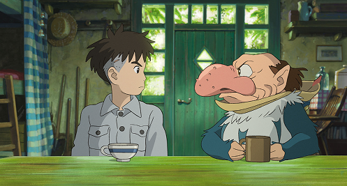
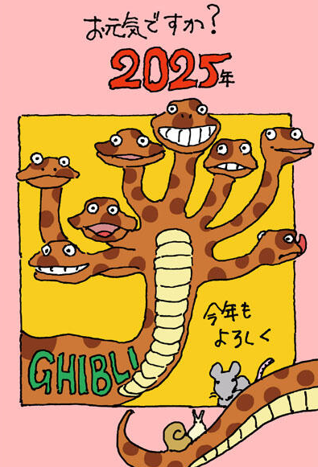

「編集部発 ジブリだより」2025年5月号
今月も前回に引き続き「編集部発 ジブリだより」とさせて頂きます、よろしくお願いします。さて、今年2025年は高畑勲監督生誕90年になります。そして同時に2025年は高畑監督の人生や考え方、作品作りなどに大きな影響を与えた太平洋戦争の終戦から80年が経過する年でもあります。前号でもこの欄で告知しましたが、右記の二つを受け、東京の麻布台ヒルズギャラリーにて、6月27日から9月15日まで「高畑勲展│日本のアニメーションを作った男。」が開催されます。「火垂るの墓」に着目した展示も予定しており、高畑監督のスタジオジブリで活動する以前の作品で培った技術や思想、そしてスタジオジブリで監督が手掛けた作品の数々を改めて見返す機会になることと思います。さらなる詳細はHP等で5月公開予定です、もうしばらくお待ちください。
2025. 05. 09.

５月２日『君たちはどう生きるか』初放送の直前に、特別番組の放送が決定しました
宮﨑駿監督の10年ぶりの劇場公開作となったスタジオジブリ最新作『君たちはどう生きるか』が、ついに５月２日よる９時からの金曜ロードショーで初放送！ それに先駆け、よる８時２分から特別番組を放送することも決定しました！日時： 2025年5月2日(金) 20:02－21:00※ (日本テレビ系列) ※一部地域を除く内容： あらすじ＆キャラクター・キャスト▼豪華キャストたちに徹底取材！▼ジブリの「たべもの」特集▼ジブリの「いきもの」特集
2025. 05. 02.
5月2日「君たちはどう生きるか」テレビ初放送が決定しました！ そして5月9日は「紅の豚」。 ２週連続スタジオジブリ作品が放送されます
作品名: 「君たちはどう生きるか」（テレビ初放送）日 時： 2025年5月2日(金) 21:00－23:39※ (日本テレビ系列)◆脚本・監督：宮﨑駿◆音楽：久石譲◆声の出演：山時聡真、菅田将暉、木村拓哉、木村佳乃、柴咲コウ、あいみょん、滝沢カレン、大竹しのぶ、竹下景子、風吹ジュン、阿川佐和子、国村隼、小林薫、火野正平 ほかそして、翌週は...
2025. 04. 20.
「編集部発 ジブリだより」2025年4月号
タイトルを見て「？」と思った読者のみなさん、〝野中くん〞が都合により今月はお休みなので、今回臨時で「編集部発 ジブリだより」とさせて頂きます。4月から新年度が始まりましたが、前年度のジブリは「君たちはどう生きるか」の展開が国内から海外へとスイッチした年でした。ご存じのように、ゴールデン・グローブ賞、英国アカデミー賞、米国アカデミー賞を始めとして、海外でも数多くの評価を頂戴したのはありがたいことです。今後の「君たち」情報についてもぜひご期待を。
2025. 04. 20.
新作短編アニメーション作品のための背景美術スタッフ募集
4月24日（木）をもって、募集は終了いたしました。たくさんのご応募、ありがとうございました。株式会社スタジオジブリでは、新作短編アニメーション作品の背景美術スタッフを募集します。下記の要項をご覧になりご応募ください。募集要項 募集職種 背景美術スタッフ募集人数 若干名応募資格 2025年4月30日時点で日本国内に在住の方。制作に必要な十分な日本語力があること。アニメーション背景美術作業の経験がある方優遇。Photoshopによる作業経験がある方優遇。
2025. 03. 28.
新作短編アニメーション作品のための仕上げスタッフ募集
4月24日（木）をもって、募集は終了いたしました。たくさんのご応募、ありがとうございました。株式会社スタジオジブリでは、新作短編アニメーション作品の仕上げ（デジタルペイント・検査）スタッフを募集します。下記の要項をご覧になりご応募ください。募集要項募集職種 仕上げ（デジタルペイント・検査）スタッフ募集人数 若干名
2025. 03. 28.
高畑 勲展 ―日本のアニメーションを作った男。開催のお知らせ
2025年が高畑勲の生誕90 年という節目であること、また、2025年は高畑がその人生に大きな影響を受けた太平洋戦争の終戦から80 年が経過する年であり、この二つを受け本年夏の開催が決定。「火垂るの墓」に着目した展示も予定しています。本展が、高畑勲がスタジオジブリで活動する以前の作品で培った技術や思想、そして数々のスタジオジブリ作品を、改めて見返す機会になることを願います。
2025. 03. 27.
「野中くん発 ジブリだより」2025年3月号
ジブリパークのチケットの内容が、4月入場分から変更になります。すでに発売中ですが、ここで改めて簡単にご紹介します。まず、セット券は2種類あります。1つは、以前からあった「ジブリパーク 大さんぽ券プレミアム」。5エリアすべての入場と、その建物すべてが観覧出来ます。もう1つは、新たに設定された「ジブリパーク 大さんぽ券スタンダード」。「ジブリの大倉庫」「魔女の谷」「もののけの里」に入場出来ますが、「魔女の谷」の「オキノ邸」「ハウルの城」「魔女の家」内をご覧になる場合は、これも新設定の当日入場券を、「魔女の谷」内で入場日にそれぞれ購入して頂くことになります。
2025.03.10.
３月７日、金曜ロードショーで宮崎吾朗監督作品『ゲド戦記』が放送されます
作品名: 「ゲド戦記」日 時： 2025年3月7日(金) 21:00－23:24※ (日本テレビ系列)◆原作：アーシュラ・K.ル＝グウィン◆原案：宮﨑駿◆監督：宮崎吾朗◆脚本：宮崎吾朗、丹羽圭子◆音楽：寺嶋民哉◆声の出演：岡田准一、手嶌葵、田中裕子、香川照之、風吹ジュン、内藤剛志、倍賞美津子、夏川結衣、小林薫、菅原文太 ほか
2025. 02. 14.
「野中くん発 ジブリだより」2025年2月号
この号が出る頃は、1年で最も寒い時期と言っていいと思いますが、そういう時でも三鷹の森ジブリ美術館やジブリパークには沢山のお客さんにお越し頂いており、本当に有難いことです。ジブリパークについては屋外の部分も多いので、運営側も寒さ対策を色々施しているようですが、特に昨年3月開園の「魔女の谷」は、初めての冬となりますので、日々、改善を図りながら運営しているようです。
2025. 02. 10.
「野中くん発 ジブリだより」2025年1月号
新年明けましておめでとうございます。とは言うものの、毎度のことながら、この原稿を書いているのは12月の中旬なのですが、でも、恐らく無事に1年の仕事を終えて、大掃除をして忘年会を行い、スタジオではいつも通り門松を第1スタジオ玄関に飾って新年を迎え、1月6日（月）から仕事を始めているはず。三鷹の森ジブリ美術館は1月3日（金）から、そしてジブリパークは1月4日（土）から、それぞれお客様をお迎えしていることでしょう。
2025. 01. 10.

スタジオジブリから謹んで新年のご挨拶を申し上げます
Illustrated by Hayao Miyazaki みなさま、謹んで新年のご挨拶を申し上げますいつもスタジオジブリを応援していただきありがとうございます昨年は年頭から天災や事故が続き、胸が締め付けられる思いで始まった一年でした。被災された方が一日も早く日常を取り戻せますよう願うとともに、その他の地域の方も今年は何事もなく静かなお正月を過ごせるように、心から祈ります。
2025. 01. 01.